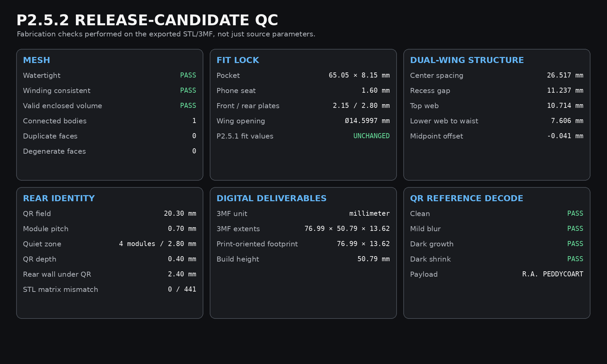
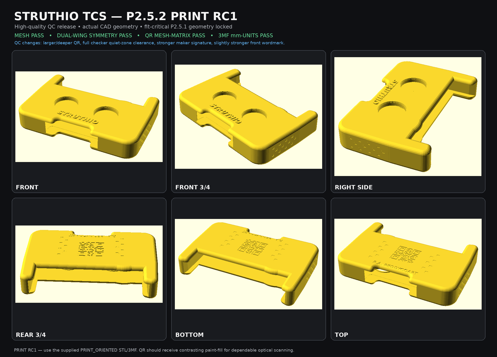

DEVELOPMENT · TACTILE CONTROL STENCIL
TCS P2.5.2 PRINT RC1 — CAD FILES
STATUS: CONFIRMED BY OWNER. Fit geometry locked (phone pocket 65.05 × 8.15 mm, seat 1.60 mm). Two wing openings Ø14.60 mm, centres 25.221 / 51.738 mm, y 20.046 mm.
Software cross-check (iPhone 13 mini, 0.15368 mm per pt): Console wing centres 101.3 / 273.8 pt → spacing 26.510 mm vs stencil 26.517 mm (Δ 0.007 mm). Console wing Ø86.3 pt = 13.26 mm inside the 14.60 mm opening (0.67 mm clearance per side). Pair centred on the screen (187.55 pt) and on the stencil (−0.015 mm).
Software cross-check (iPhone 13 mini, 0.15368 mm per pt): Console wing centres 101.3 / 273.8 pt → spacing 26.510 mm vs stencil 26.517 mm (Δ 0.007 mm). Console wing Ø86.3 pt = 13.26 mm inside the 14.60 mm opening (0.67 mm clearance per side). Pair centred on the screen (187.55 pt) and on the stencil (−0.015 mm).
DOWNLOAD / PRINT
- PRINT THIS — 3MF, print-oriented (mm)185 KB
- PRINT THIS — STL, print-oriented800 KB
- 3MF, design orientation170 KB
- STL, design orientation800 KB
- OpenSCAD source (parametric)19 KB
- Dimension schedule (CSV)1 KB
- Owner-confirmed measurements (CSV)1 KB
- QA report2 KB
- Print README1 KB
PRINT SETTINGS
- Use the PRINT_ORIENTED 3MF or STL. Scale 100%.
- TPU 95A. 0.20 mm layers, 5 perimeters, 5–6 top/bottom layers, 20–30% infill, 8–12 mm brim (standing orientation).
- Start from the printer/filament maker's TPU profile. Check the slicer preview around the lettering, the QR and the top of both circular wells.
- Paint-fill the rear QR (0.40 mm deboss, 0.70 mm modules, level M, payload “R.A. PEDDYCOART”) — geometry alone gives no optical contrast.
MEASUREMENTS
| actual mesh width | 76.98814 mm | PASS |
| actual mesh height | 50.78744 mm | PASS |
| actual mesh depth | 13.62415 mm | includes 0.55 mm raised wordmark |
| pocket width | 65.05 mm | LOCKED |
| pocket depth | 8.15 mm | LOCKED |
| phone seat y | 1.60 mm | LOCKED |
| front plate | 2.15 mm | LOCKED |
| rear plate | 2.80 mm | LOCKED |
| left wing center x | 25.22084 mm | LOCKED |
| right wing center x | 51.73766 mm | LOCKED |
| wing center y | 20.04634 mm | LOCKED |
| physical wing opening diameter | 14.59971 mm | LOCKED |
| wing shallow recess gap | 11.23711 mm | PASS |
| top web above wing recess | 10.71380 mm | PASS |
| lower web to waist | 7.60649 mm | PASS |
| front wordmark relief | 0.55 mm | QC strengthened from 0.50 |
| qr field | 20.30 x 20.30 mm | QC enlarged from 17.98 |
| qr module pitch | 0.70 mm | QC enlarged from 0.62 |
| qr quiet zone | 4 per side modules | DENSO requirement |
| qr deboss depth | 0.40 mm | two 0.20-mm layers |
| qr error correction | M level | mesh-verified pattern |
| qr payload | R.A. PEDDYCOART text | verified |
| maker signature size | 2.15 mm | QC enlarged from 2.00 |
| maker signature depth | 0.30 mm | QC deepened from 0.20 |
| maker signature stroke boost | 0.06 mm | printability |
| qr mesh matrix mismatches | 0 modules | PASS = 0 |
| rear wall remaining under qr | 2.40 mm | PASS |
QC


BACK TO CONSOLE